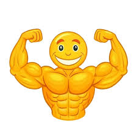

Tapis de yoga ? Une fois, tu t’allonges dessus pour regarder Netflix et tu te sens déjà zen.
Vêtements de sport ? L’essentiel, c’est qu'ils soient suffisamment serrés pour que tout le monde sache que tu as l’intention de t'entraîner.
Peu importe si tu ne sais pas exactement quoi faire une fois que tu les as mis.
Échauffement ? C’est une option, pas une obligation.
À quoi bon réchauffer des muscles que tu n’utilises même pas ? Ton corps est déjà assez intelligent pour savoir qu’il n’y a pas de "vraie" activité à faire.
Pourquoi faire des étirements quand tu peux te contenter de te lever pour aller chercher une autre collation ? C’est une gymnastique mentale bien plus intense.
Les étirements classiques sont dépassés. Prépare-toi plutôt à t’étirer… dans tes pensées. Imagine-toi en train de t'étirer. Ta flexibilité mentale va atteindre des sommets.
L’idée, c’est de faire semblant d’être en train de faire un exercice sans vraiment t'en donner la peine. Essaye la méthode "marche sur place pendant 30 secondes", mais rrête-toi dès que tu entends un bruit dans la cuisine. C’est du cardio, mais un cardio très passif, ce qui est totalement acceptable.
Autre option : la "position de l'athlète olympique". Assieds-toi dans une chaise confortable, mets tes bras en position de "muscle flex", et attends que le monde te reconnaisse pour ta forme physique impressionnante. Si tu veux vraiment pousser l’expérience plus loin, tu peux prendre un selfie et le publier avec une légende du genre : "Le gym, c’est pour les amateurs."
Rien ne vaut un smoothie après l’entraînement. Bon, peut-être que ton smoothie est juste un mélange de chips et de soda, mais l’essentiel est d’avoir l’air d’être sain.
Les légumes ? C’est un concept abstrait. La vraie question est : ton plat a-t-il une couleur vibrante qui pourrait passer pour un super-aliment ? Si tu peux le prendre en photo et le taguer #fitfam, alors tu as déjà gagné.
Et n'oublions pas le "repas de récupération". Après une série de cinq minutes de "séance de sport" sur Instagram, il est temps de te récompenser avec un bon vieux burger. Tu mérites ça, n'est-ce pas ? La récupération mentale est tout aussi importante que la récupération physique, après tout.
Un athlète sait qu'il doit prendre du temps pour se reposer. Alors, pourquoi ne pas t’allonger pendant une heure (ou trois) et t’offrir une série entière de vidéos de chats sur YouTube ? Tu peux même faire semblant d’être "en récupération active" pendant que tu observes la dynamique du chat qui chasse sa propre queue.
Le secret du repos est simple : ne pas bouger. Si tu sens que tu vas t'endormir, félicitations, tu viens de découvrir l’art du sommeil de champion. Si tu fais une sieste en position semi-allongée, tu es officiellement dans l’une des poses les plus difficiles du yoga. Le yoga du canapé. Respect.
On sait tous qu’il n’y a rien de plus motivant que de voir des résultats. Mais pourquoi se soucier des chiffres quand on peut simplement regarder le nombre de vues de ta dernière vidéo de motivation sur TikTok ? C'est bien plus satisfaisant, et tellement moins épuisant.
Ne t'inquiète pas trop des objectifs physiques réels. Mets juste une photo de tes baskets dernier cri sur ton feed avec le hashtag #MotivationLundi, et laisse les autres se demander si tu fais réellement quelque chose. Après tout, si tu partages, c’est comme si tu avais réussi, non ?
Enfin, prends le temps de méditer… mais à ta façon. Ferme les yeux, pense à ta journée idéale en tant qu'athlète professionnel, puis oublie cette idée dès que tu entends ton téléphone vibrer. La vraie récupération ne passe pas par la relaxation, elle passe par l’évasion dans un monde virtuel où tu n'as pas à te soucier de bouger. Un peu de zéro effort mental et tu seras prêt à recommencer… à faire la sieste.
